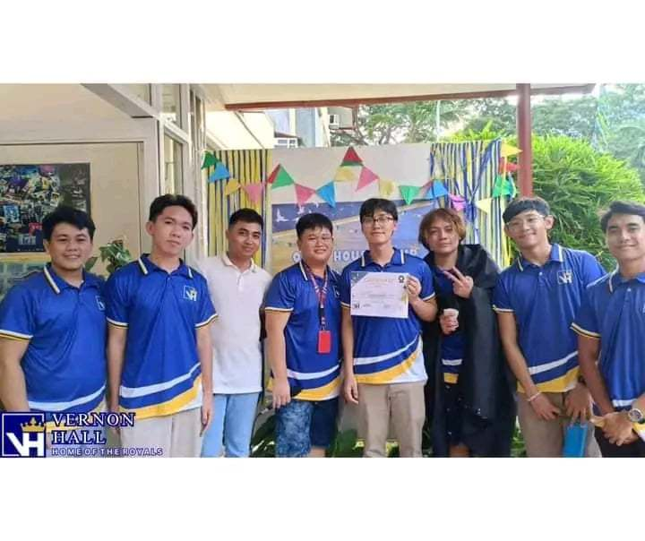
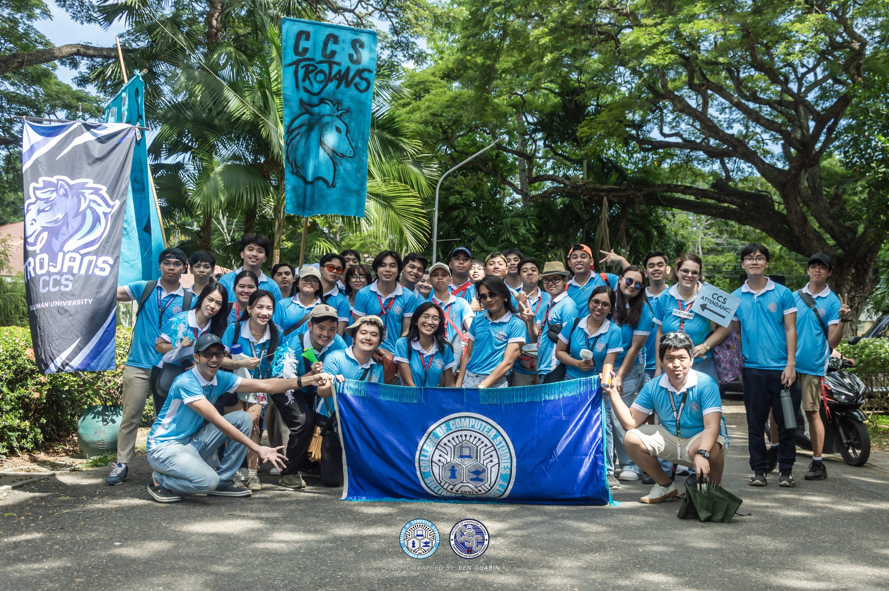
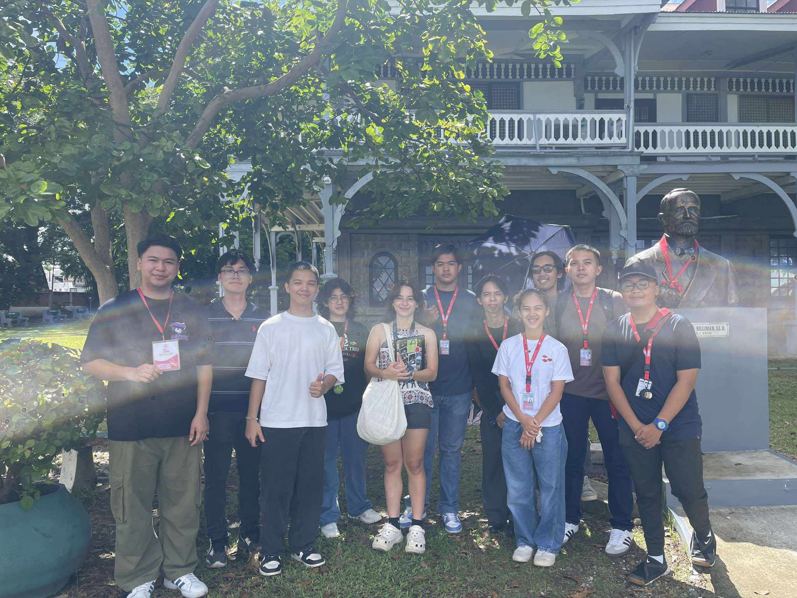
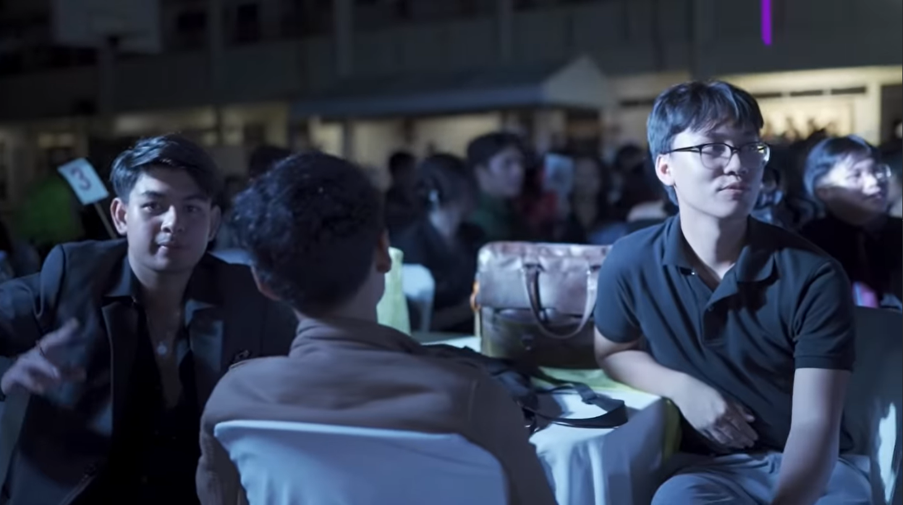
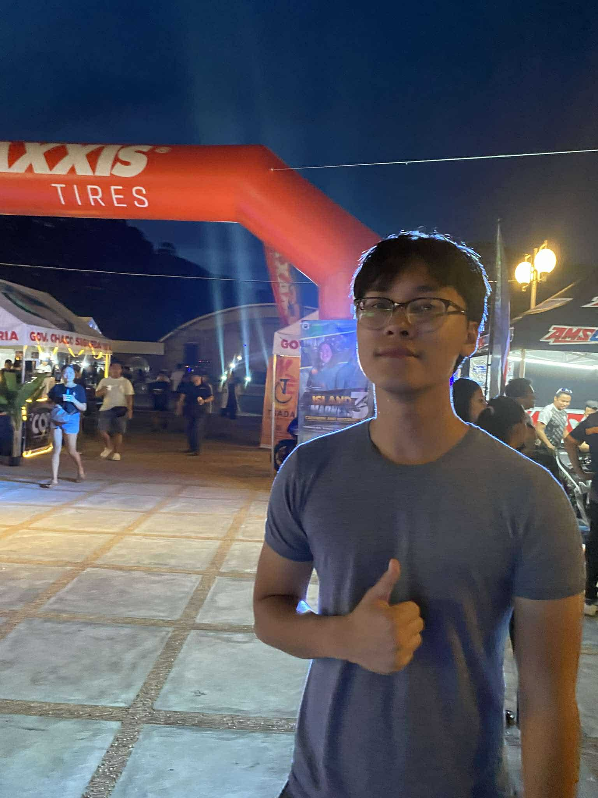

All Dormitory Open House
All Dormitory Open House at Vernon Hall Dormitory, where each room has a unique theme

Parada Sillimaniana
The Main Parade for Parada Sillimaniana held on August 26, 2024 at downtown Dumaguete

Silliman Campus Tour
A tour of the Silliman Campus, organized by the Corps of Campus Ambassadors

CCS Acquaintance Party
Acquaintance Party at the College of Computer Studies

Island Madness 3: Carshow and Motorshow
Island Madness 3: Carshow and Motorshow at Freedom Park, an event for car enthusiasts